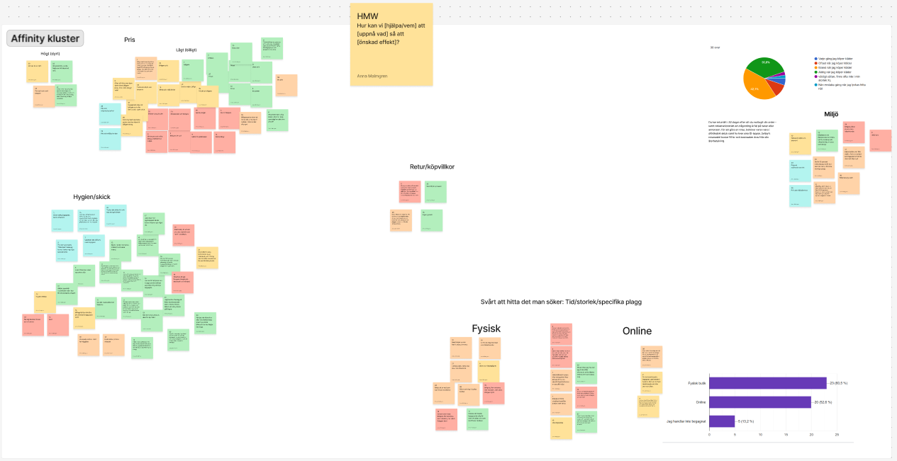
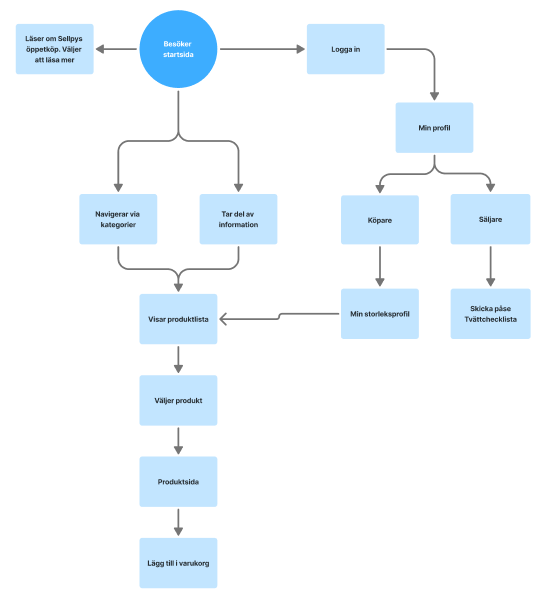
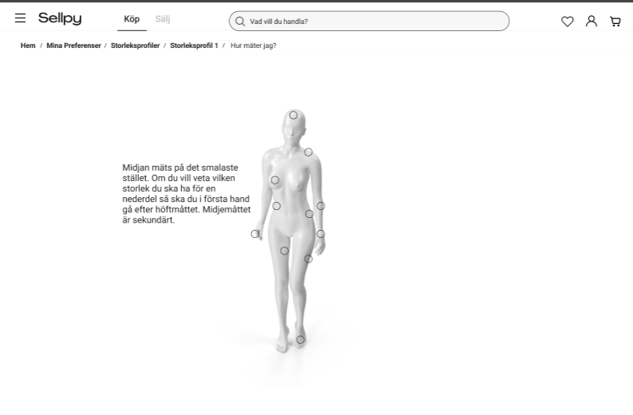

How can UX encourage more sustainable shopping habits?
Clothing overconsumption has become one of the fashion industry's largest environmental challenges. While second-hand marketplaces already exist, many consumers still prefer buying new clothing because it feels easier, faster and more appealing. Our goal was not to redesign Sellpy for the sake of aesthetics, but to explore how UX design could encourage more people to choose second-hand and sell clothing they no longer use.

Understanding why people avoid second-hand shopping
Through interviews, usability testing and early prototype evaluations we identified several recurring patterns:
- Many users associated second-hand clothing with poor hygiene.
- Finding the right size and style felt time-consuming.
- Users lacked confidence in product quality.
- Selling clothes seemed complicated and required too much effort.
These insights became the foundation for every design decision throughout the project.

Mapping the flow from motivation to action
Based on our research, we redesigned key parts of the experience with a focus on reducing friction, increasing trust and making sustainable shopping feel as intuitive as traditional e-commerce. The design process included ideation, wireframing, interaction design, iterative prototyping and continuous testing.

Supporting users with clearer guidance
The prototype includes a measurement guide designed to reduce uncertainty and help users feel more confident when choosing second-hand clothing online.